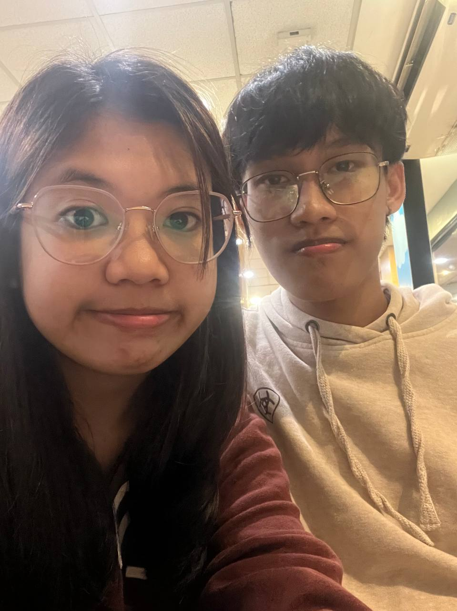
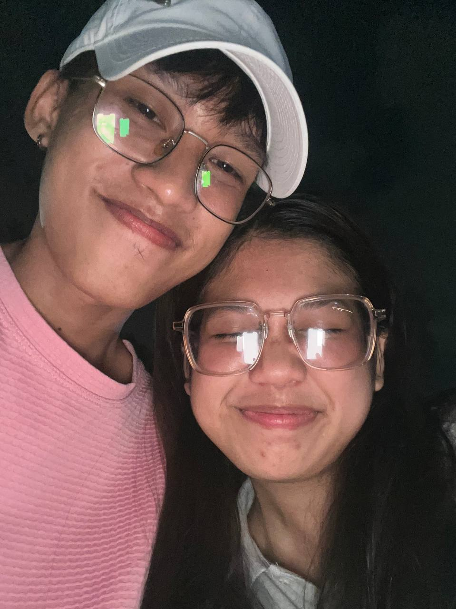
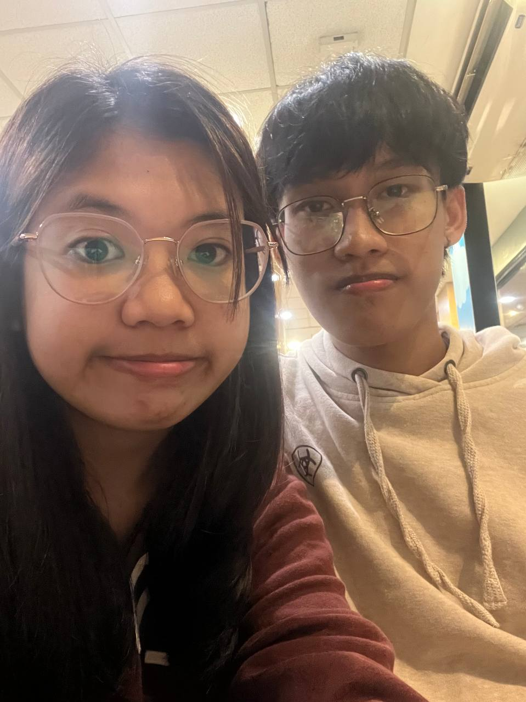
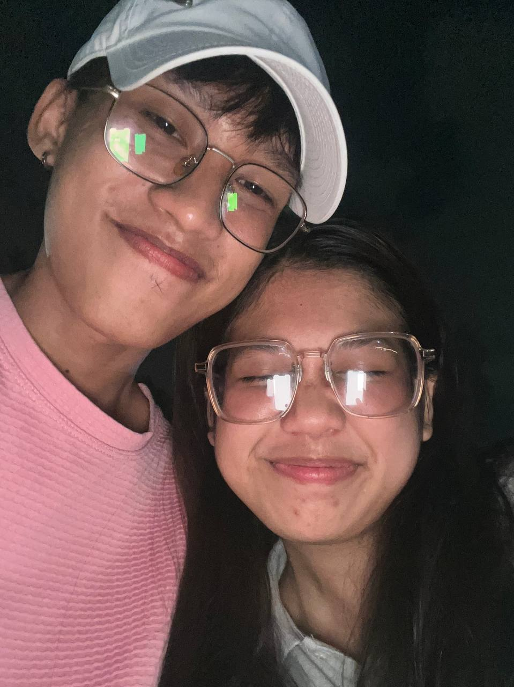

Will you be my Valentine?
YAY!💕🥹
 



Mylove, Happy 4th Monthsarry. I do not need a special day like this to say how very much I love you. You are in my thoughts every day, and I cannot think of being without you. I remember an old song that says, "You make me happy," and you certainly do. There is nothing about you that I do not love--I love your hair, your voice, your eyes, the sound of your laugh, and especially the way you smile at me. I am the luckiest person alive to be able to call you my love. I love you when you are all dressed up. I love you when you are sad, and I love you when you are mad (but not as much). Sometimes I wish there were more minutes in the day so we could spend even more time together. You’re my greatest adventure and I love you so much. I love you more than all the stars in the sky. Your beauty especially your smile make me fall more for you each and every day. I’m so lucky you’re mine. Happy 4th Monthsarry, my love. I love you, see you on February 14, 2025.